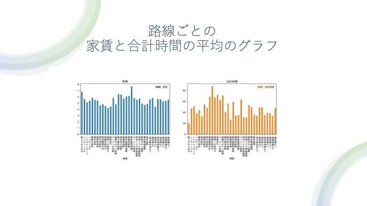
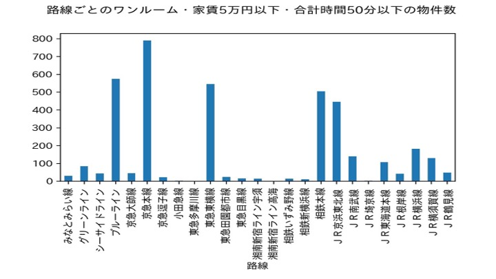
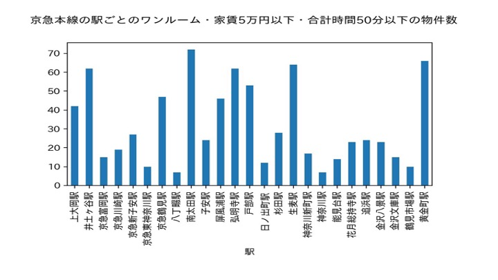
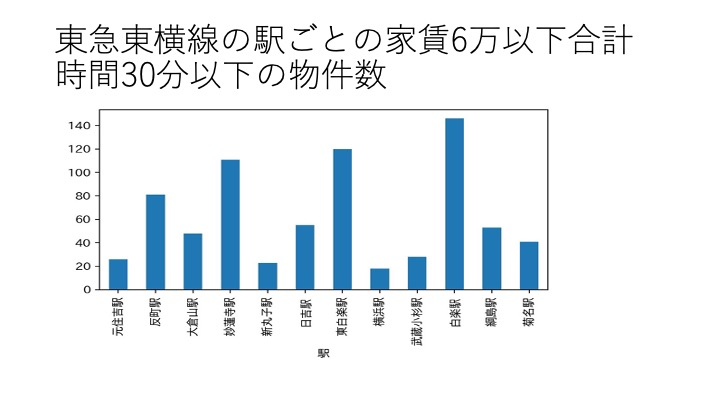
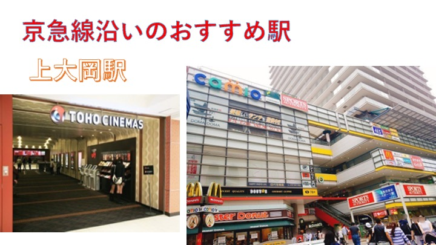
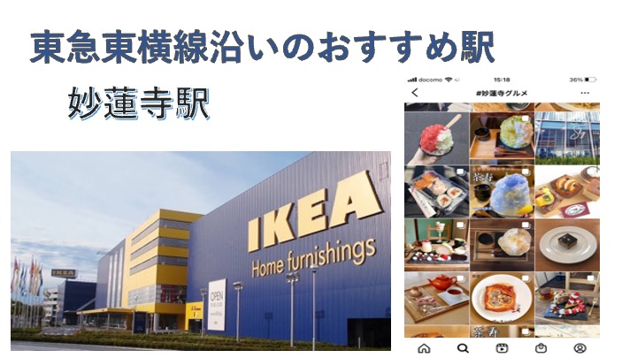

XBP Assignment８
発表
一枚目
二枚目

三枚目

この二つのグラフから家賃が低く、合計時間が短いものを選んだ。
四枚目

路線ごとのワンルーム・家賃５万円以下・合計時間50分以下の物件を調べたところ京急本線が多いことがわかった。
五枚目

こちらは合計時間重視のワンルーム・家賃６万円以下・合計時間30分以下の物件数を調べたところ東急東横線が多いことがわかった。
でてきた二つのグラフの京急本線と東急東横線の二箇所に絞っておすすめの駅を調べることにした。
六枚目

京急本線の中のおすすめの駅は上大岡駅となった
七枚目

東急東横線のおすすめ駅は妙蓮寺駅となった。
八枚目

おすすめポイントは大きな商業施設があったりすること！
九枚目

おすすめポイントはIKEAが近かったり、駅前にはスーパーなどもあるので非常に便利で、大学までもとても近い。
デザイン演習I・II
XBPトップページ